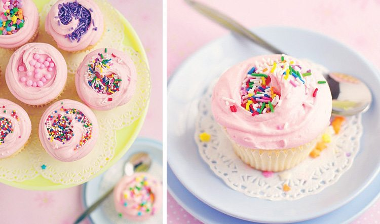
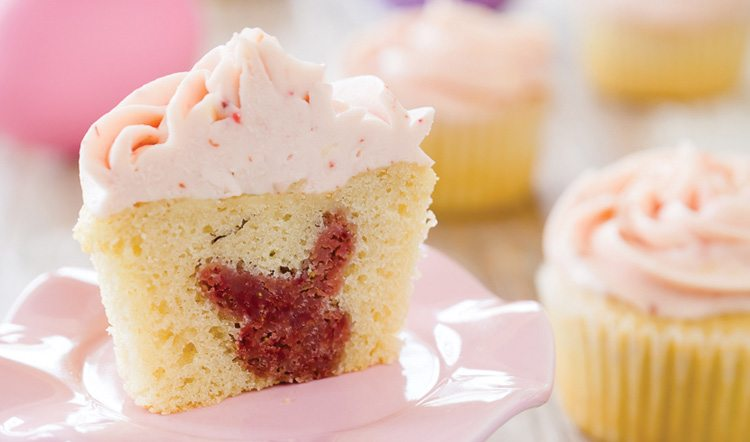
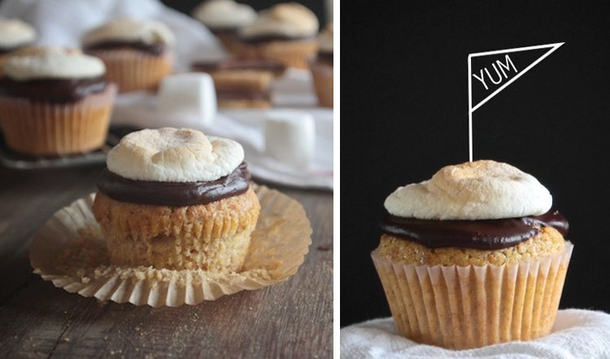

Bakery Style Vanilla Cupcakes 
There’s no better cupcake to start off our list than the classic vanilla buttercream. This recipe is an ode to the brightly-hued beauties made famous by Magnolia Bakery in NYC. Grab your most colorful sprinkles and pay homage to the original gangster of frosted desserts. Thanks to Sweetapolita for sharing photo and recipe for these Bakery Style Vanilla Cupcakes.
Peanut Butter Fudge Coffee Ice Cream Cupcakes
These decadent delicacies boast a frozen surprise inside- a coffee ice cream center. Keep a batch handy in the freezer to combat caffeine and sugar cravings- a dessert double whammy. Thanks to How Sweet It Is for sharing photo and recipe for these Peanut Butter Fudge Coffee Ice Cream Cupcakes.
Ultimate Marble Cupcakes

Chocolate or vanilla? The struggle is real. Eliminate that decision and get the best of both worlds with these decadent marbled cupcakes. It’s just so much more delicious when everyone works together. Thanks to Sally’s Baking Addiction for sharing photo and recipe for these Ultimate Marble Cupcakes.
Easter Cupcakes with Bunny Inside 
With a frosting that tastes just like the beloved batter, this is the perfect recipe for anyone unable to resist the lure of licking the bowl when making cookies. Thanks to Cupcake Project for sharing the recipe for these Easter Cupcakes With a Surprise Bunny Inside, photo by J. Pollack Photography.
S’mores Cupcakes 
One bite into these ooey, gooey masterpieces of nostalgia, and you’ll instantly be transported to a starry night under a crackling campfire. Thanks to Shutterbean for sharing photo and recipe for these S’mores Cupcakes.